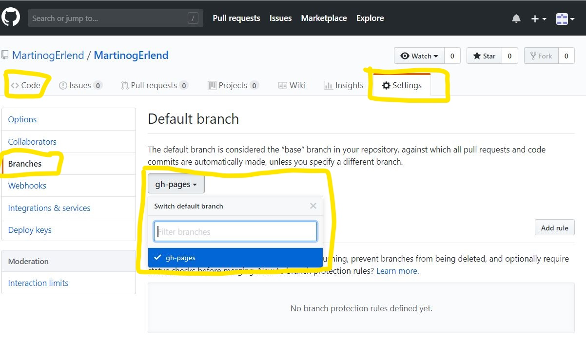
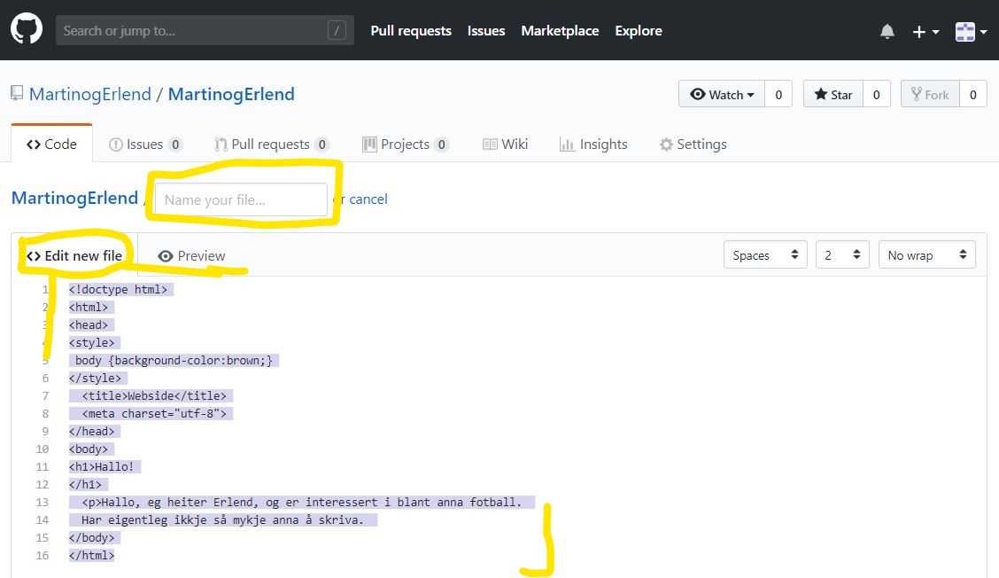

Det første du må gjøre er å åpne nettlesaren din, og så skrive inn https://github.com/.
Neste steg er å logge inn på din Github bruker*. Trykk "Sign in", deretter skriv inn brukernavnet og passordet ditt, og trykk "Sign in".

Neste steg er å trykke deg inn på "New repository".
Nå skal du ha kommet til en ny side, der må du fylle ut skjemaet.
Neste steg du må gjøre er å finne "Branch", trykk på den, på "Find or create a branch..." skriver du inn "gh-pages", deretter trykker du "create branch".

Trykk deg inn på settings, finn "Branches" på siden, der inne skal du endre "gh-pages" til default branch. Gå tilbake til "<>Code".
Trykk på "Create new file", kall denne filen index.html, kopier eller skriv inn innholdet du vil ha. Gå nederst på siden og trykk "Commit new file".
Nå skal nettsiden være publisert, du kan finne URL'en ved å inn på settings. Sjekk ut siden!